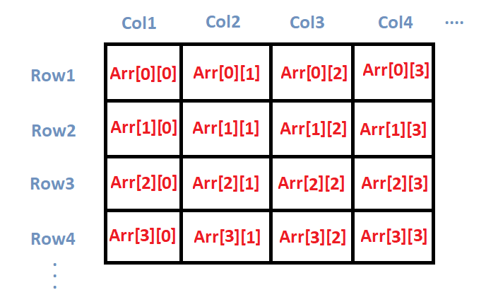

Arrays
آرایه چیست؟
شما تا الان تعریف متغیر ها رو یاد گرفتید و با تایپ های مختلف مثل ...int, double, float آشنا هستین.
مسئله محاسبه میانگین نمرات یک دانشجو رو در نظر بگیرید. با فرض این که دانشجو در ترم مورد نظر ۶ درس برداشته. با استفاده از
متغیرها، کد این مسئله به فرم زیر در میاد.
همونطور که می بینید این کار جلوه خوبی نداره و همچنین اگر ورودی ها بیشتر بشه کار سخت تر یا حتی نا ممکن میشه.
در اینحا برای ذخیره سازی داده ها از یک ساختار به اسم آرایه استفاده می کنیم.
آرایه در زبان ++C مجموعهای از عناصر از نوع یکسان را ذخیره میکند.
پیاده سازی آرایه
برای پیاده سازی آرایه باید نوع داده هایی که میخوایم ذخیره کنیم به همراه اسم آرایه به همراه تعداد عضو های مورد نظر رو بنویسیم.
حالا برای نحوه تعریف آرایه برای مثال بالا درمورد نمرات دانشجو خواهیم داشت:
حالا دقیقا مثل کد بالا انگار همون ۶ تا داده از نوع int داریم صرفا منظم تر و جمع و جور تر در یک ساختار خاص.
نحوه مقداردهی اولیه به آرایه
شما میتونین همون موقع که آرایه رو تعریف میکنین به خونه هاش مقدار اولیه بدین.

همونطور که توی عکس میبینین مقادیر آرایه و شماره خونه های آرایه (indexes) رو مشخص کرده. نکته ای که وجود داره اینه که آرایه صفر بیس هستش (1).
- یعنی اینکه شماره index ها از صفر شروع میشه همونطور که توی عکس میبینین
و مثل این میمونه که اینجوری تعریف کنیم 6 تا
intرو:
یه راه دیگه اینه که میتونین بعد از تعریف آرایه هم به خونه هاش مقدار بدین.
به عبارتی داریم با هر کدوم از خونه ها مثل یک int عادی رفتار میکنیم (1).
- میتونیم عملیات های دیگه ای که در گذشته روی
intانجام میدادیم انجام بدیم.
پیاده سازی مسئله مطرح شده با آرایه
حالا بیاین مسئله ای که برای معدل دانشجو گفته شد رو با آرایه ها پیاده سازی کنیم.
نکته
اما قدرت واقعی آرایه ها وقتی نمایان میشه که با حلقه ها ترکیب بشن.
به عنوان مثال کد بالا معادل با کد زیر میشه. حتی می تونیم تعداد دروس رو به عنوان ورودی دریافت کنیم.
اشتباه رایج
خیلی وقت ها برنامه نویس ها حواسشون نیست و مقدار اولیه نمیدن به یک خونه ای از آرایه و باهاش کار میکنن.
سوالی که ممکنه پیش بیاد اینه که اگه مقدار اولیه ندیم به آرایه پس واقعا چی اونجا ذخیره شده در حالت اولیه؟
بنظرتون خروجی کد بالا چیه؟
جوابش واضح نیست چون سیستم بهتون یه مقدار غیر قابل پیش بینی میده و دلیلش هم اینه چون اون خونه از آرایه هنوز هیچی بهش assign نشده مقداری که در گذشته اونجا بوده و توسط ram ازش استفاده میشده توی پردازش های سیستمی بهتون خروجی داده میشه.
که این دقیقا برای این حالت هم برقراره:
تو حالت عادی هم وقتی int تعریف کنین و بهش مقدار اولیه ندین سیستم بهتون یه چیز غیر قابل پیش بینی خروجی میده.
مثال های دیگه ای هم برای آرایه میشه زد با تایپ های دیگه (لزوما قرار نیست int باشه):
2D Arrays
آرایه 2 بعدی هم میشه تعریف کرد به این شکل که شبیه جدول خواهد بود:

همونطور که توی عکس میبینید هم سطر ها هم ستون ها صفر بیس هستن.
For loop on 2D Array
شما هر وقت خواستین فور بزنید بر روی آرایه دو بعدی میتونین به این شکل بزنید:
-
نحوه مقدار اولیه دادن به آرایه دو بعدی بدین شکل هست.
-
بعد خروجی دادن هر سطر به طور کامل میریم خط بعدی توی ترمینال تا سطر ها پشت سر هم خروجی داده نشن.
-
اول یک سطر
iفیکس میکنیم باloopاول و بعدش روی ستون های سطرiحرکت میکنیم باloopدوم.
یا به این شکل:
- اول ستون رو فیکس میکنیم و بعد روی سطر هاش حرکت میکنیم.
یا به این شکل:
- اول ستون هارو از ته شروع میکنیم فیکس کنیم و بعد روی سطر های ستون فعلی حرکت میکنیم.
یا به بی شمار حالت دیگه که بسته به نیازتون میتونین پیاده سازی کنین.
از DATA_TYPE های متنوعی میتونین استفاده کنین و اونقدر محدودیتی ندارین.
-
در این بخش درمورد vector میتونید بخونید.
-
یک آرایه دو بعدی هستش که هر خونه اش یک
vectorمجزا به حساب میاد که میتونین به تعداد دلخواه عدد به هر وکتور خونه های آرایه اختصاص بدین و لزوما قرار نیست که سایز وکتور ها باهم برابر باشن.
به همین ترتیب شما میتونید آرایه های
...3,4,5بعدی تعریف کنید ولی تصور کردنشون بسیار سخت یا غیر ممکن خواهد بود. در اینجا اطلاعات بیشتری میتونید کسب کنید.